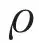
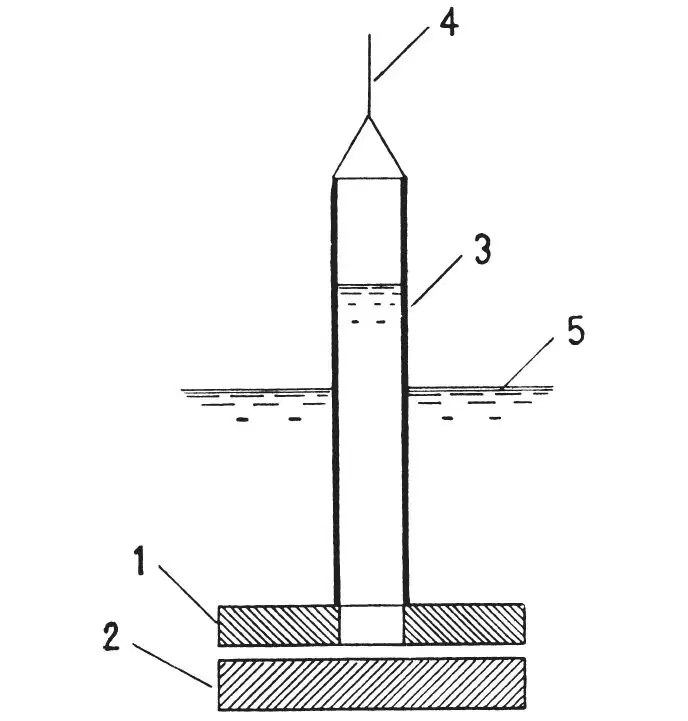

中文
中文P. Kapitza
Editor’s Note
Earlier experiments had noted strange behaviour in liquid helium at temperatures below about 2.18K, where the liquid conducts heat with extraordinary efficiency. Here, physicist Pyotr Kapitza suggests that a dramatic decrease in the fluid’s viscosity might explain the phenomenon, as it would make heat transport by convection much easier. Some recent experiments, he notes, had measured a decrease in the viscosity, but now his group, in a much more sensitive experiment, has found that the viscosity of the liquid below 2.18K is at least 10,000 times smaller than that of any other known substance. Kapitza suggested this might be explained if liquid helium becomes a “superfluid” at low temperatures, perhaps even flowing with no viscosity at all. 中文
THE abnormally high heat conductivity of helium Ⅱ below the λ-point, as first observed by Keesom, suggested to me the possibility of an explanation in terms of convection currents. This explanation would require helium Ⅱ to have an abnormally low viscosity; at present, the only viscosity measurements on liquid helium have been made in Toronto1, and showed that there is a drop in viscosity below the λ-point by a factor of 3 compared with liquid helium at normal pressure, and by a factor of 8 compared with the value just above the λ-point. In these experiments, however, no check was made to ensure that the motion was laminar, and not turbulent. 中文
The important fact that liquid helium has a specific density

of about 0.15, not very different from that of an ordinary fluid, while its viscosity μ is very small comparable to that of a gas, makes its kinematic viscosity ν = μ/ extraordinary small. Consequently when the liquid is in motion in an ordinary viscosimeter, the Reynolds number may become very high, while in order to keep the motion laminar, especially in the method used in Toronto, namely, the damping of an oscillating cylinder, the Reynolds number must be kept very low. This requirement was not fulfilled in the Toronto experiments, and the deduced value of viscosity thus refers to turbulent motion, and consequently may be higher by any amount than the real value. 中文
The very small kinematic viscosity of liquid helium Ⅱ thus makes it difficult to measure the viscosity. In an attempt to get laminar motion the following method (shown diagrammatically in the accompanying illustration) was devised. The viscosity was measured by the pressure drop when the liquid flows through the gap between the disks 1 and 2; these disks were of glass and were optically flat, the gap between them being adjustable by mica distance pieces. The upper disk, 1, was 3 cm. in diameter with a central hole of 1.5 cm. diameter, over which a glass tube (3) was fixed. Lowering and raising this plunger in the liquid helium by means of the thread (4), the level of the liquid column in the tube 3 could be set above or below the level (5) of the liquid in the surrounding Dewar flask. The amount of flow and the pressure were deduced from the difference of the two levels, which was measured by cathetometer. 中文

The results of the measurements were rather striking. When there were no distance pieces between the disks, and the plates 1 and 2 were brought into contact (by observation of optical fringes, their separation was estimated to be about half a micron), the flow of liquid above the λ-point could be only just detected over several minutes, while below the λ-point the liquid helium flowed quite easily, and the level in the tube 3 settled down in a few seconds. From the measurements we can conclude that the viscosity of helium Ⅱ is at least 1,500 times smaller than that of helium Ⅰ at normal pressure. 中文
The experiments also showed that in the case of helium Ⅱ, the pressure drop across the gap was proportional to the square of the velocity of flow, which means that the flow must have been turbulent. If, however, we calculate the viscosity, assuming the flow to have been laminar, we obtain a value of the order 10－9 C.G.S., which is evidently still only an upper limit to the true value. Using this estimate, the Reynolds number, even with such a small gap, comes out higher than 50,000, a value for which turbulence might indeed be expected. 中文
We are making experiments in the hope of still further reducing the upper limit to the viscosity of liquid helium Ⅱ, but the present upper limit (namely, 10－9 C.G.S.) is already very striking, since it is more than 104 times smaller than that of hydrogen gas (previously thought to be the fluid of least viscosity). The present limit is perhaps sufficient to suggest, by analogy with supraconductors, that the helium below the λ-point enters a special state which might be called a “superfluid”. 中文
As we have already mentioned, an abnormally low viscosity such as indicated by our experiments might indeed provide an explanation for the high thermal conductivity, and for the other anomalous properties observed by Allen, Peierls, and Uddin2. It is evidently possible that the turbulent motion, inevitably set up in the technical manipulation required in working with the liquid helium Ⅱ, might on account of the great fluidity, not die out, even in the small capillary tubes in which the thermal conductivity was measured; such turbulence would transport heat extremely efficiently by convection. 中文
(141, 74; 1938)
P. Kapitza: Institute for Physical Problems, Academy of Sciences, Moscow, Dec.3.
References:
1. Burton, Nature, 135, 265 (1935); Wilhelm, Misener and Clark, Proc. Roy. Soc., A, 151, 342 (1935).
2. Nature, 140, 62 (1937).